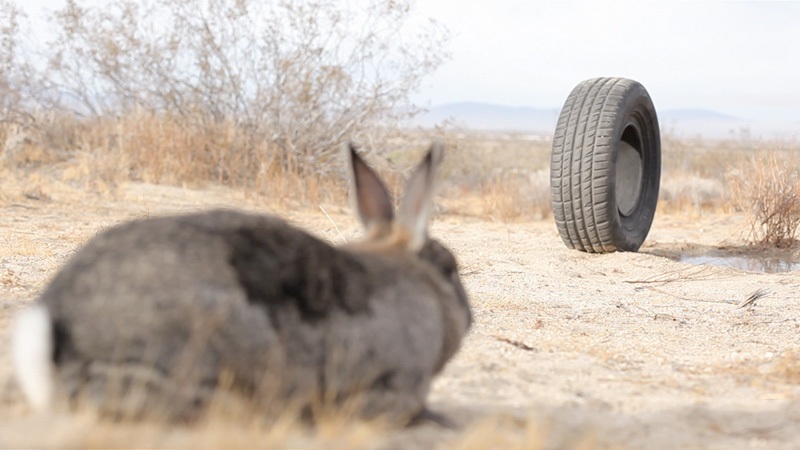
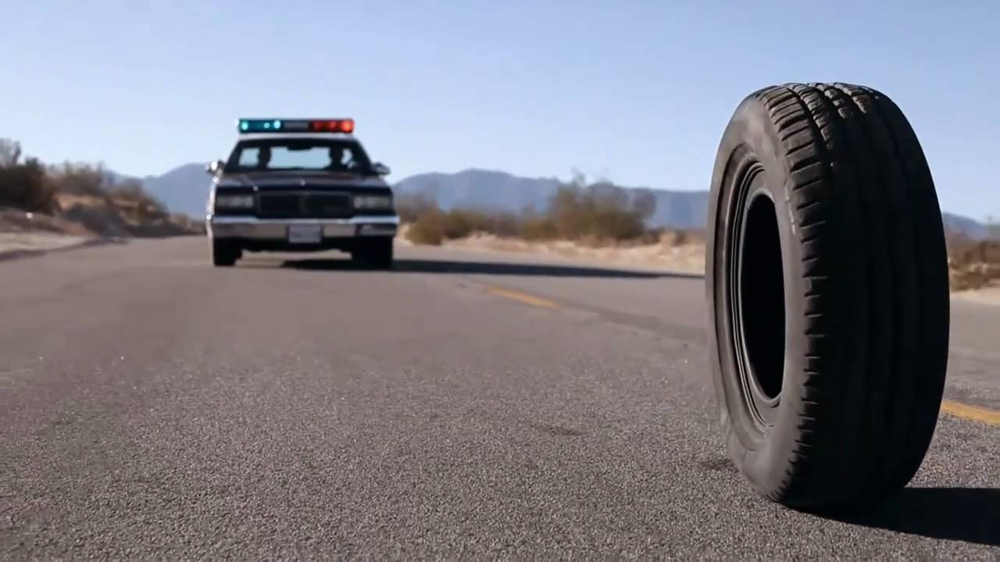

 
22H ➭ Rubber - Quentin Dupieux, 2010, 82 min
Dans le désert californien, des spectateurs incrédules assistent aux aventures d’un pneu tueur et télépathe, mystérieusement attiré par une jolie jeune fille. Une enquête commence.